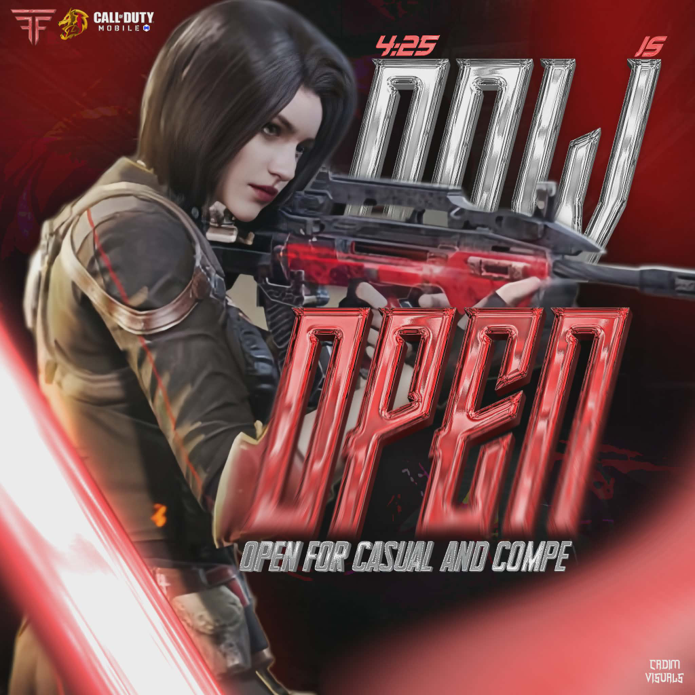

01 / VISUAL ENGINEERING
Graphic
Design.
A design should do more than occupy space. It should communicate an idea before someone even reads the details.
Through graphic design, I create visual materials that combine composition, typography, imagery, and color into a cohesive presentation. Whether you need a promotional graphic, a digital poster, or a visual concept for a personal project, the goal is to make your message recognizable and memorable. Good design helps people understand what you're presenting while giving your project a more professional identity.
Every element has a purpose. Every detail contributes to the bigger picture.
COMPOSITION / TYPE / IMPACT